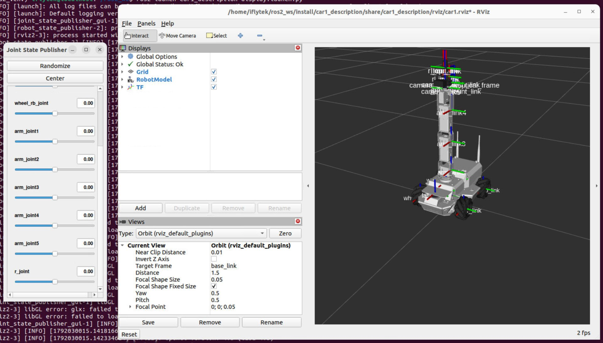

URDF 模型与仿真控制
URDF 基础已在《机器人 ROS2 应用与开发》学过，这里直接上手——先启动小车的 RViz 仿真熟悉机械臂模型，再通过拖拽 GUI 认识 joint、夹爪与 base_link / camera_link / tcp_link，为后续实验铺垫。
01问题引入：机械臂为什么这样设计
机械臂不是凭空画出来的——它是照着一条手臂"仿"出来的：底座回转像肩、两节臂杆像大臂小臂、腕部两关节像手腕、夹爪像手指。先把下图这副数字身体当成"一条手臂"来看：它为什么被设计成这样？哪里在仿人，哪里又故意和人不一样？

# 在带有 GUI 界面的终端运行：实验箱屏幕、VNC 或 MobaxTerm（纯 SSH 黑窗弹不出图形窗口） ros2 launch car1_description display.launch.py
下面三张卡就是"哪里仿人、哪里故意不一样"的三条线索——它们的答案全部写在一份说明书（car1.urdf）里，而且就在这屏左右两个窗口里看得见：
桌面抓取的最小完备集：回转定方位、大臂小臂定距离、腕部两关节定姿态、夹爪收尾执行——少一个够不着，多一个成本涨。设计从任务倒推，EXP-07 的视觉抓取就是终点。
car1 是"移动底盘 + 机械臂"的复合体——车轮关节也是身体的一部分，也会随臂关节一起出现在 /joint_states 消息里。看截图左窗：滑块从 wheel_rb_joint 一路排到 r_joint。
base_link 是根（一切坐标的原点）、camera_link 是眼（视觉观测挂在腕上）、tcp_link 是指尖参考点（IK 的落点、抓取的验收点）——后续所有"在哪""到哪"全靠这三个词说话。
02上手第一步：RViz 仿真跑起来
colcon build --packages-select car1_description（打出 Finished 才算成功）source /opt/ros/humble/setup.bash → source ~/ros2_ws/install/setup.bash（两行都无任何输出才是对的）ros2 launch car1_description display.launch.py# 就这三步——注意每个新终端都要重新 source 两次 colcon build --packages-select car1_description source install/setup.bash ros2 launch car1_description display.launch.py
对照 01 节截图，两个窗口的分工与用法：
逐个拖滑块：arm_joint1 底座回转、arm_joint2 大臂抬举、arm_joint3 小臂伸缩、arm_joint4/5 腕部调姿态，滑到底部的 r_joint 就是夹爪（旋转开合，源码里由 gripper_controller 单独接管它）；wheel_lb/lf/rb/rf 是四个车轮，按钮 Randomize 随机姿态找手感、Center 一键回零。它只干一件事：把每个关节的角度发布到 /joint_states——注意"发布者"这个身份不专属于 GUI，06 节动手任务里会用 ros2 topic pub 顶替它。
Displays 里勾着 Grid / RobotModel / TF：它订阅话题数据，左窗每发布一次新关节角，右窗模型就跟着更新一次——这条"发布 → 订阅"的单向链正是 05 要拆的话题链路。
在右窗 TF 标签里逐个勾选一遍：base_link（车体之根）、camera_link（腕上相机）、tcp_link（指尖参考）——把它们和"为什么 · 3"对上号。
窗口里的事摸出问题了？左窗发布、右窗订阅，先把三个词讲清，链路才看得懂 → 03 关节 · 限位 · 角色
03关节 · 限位 · 角色
关节（叫什么）、限位（能转多少）、角色（干什么用）——一个关节一行，一次讲透。限位按角度分两层标注：URDF 层 = display 里滑块的真实行程（文件里实际写的是弧度，04 节见原文）；实机层 = 270° 舵机真正能去的地方：
| 关节（GUI 同名） | 转轴 | 限位（角度）· URDF 滑块 | 限位 · 实机（270° 舵机） | 角色 |
|---|---|---|---|---|
| arm_joint1（底座回转） | Z | ±180° | ±135° | 决定手臂朝向哪个方位 |
| arm_joint2（大臂俯仰） | Y | ±180° | ±135° | 抬起整条手臂 |
| arm_joint3（小臂俯仰） | Y | ±180° | ±135° | 伸缩半径的关键 |
| arm_joint4（腕部俯仰） | Y | ±180° | ±135° | 决定末端俯仰角（pitch），桌面抓取的关键 |
| arm_joint5（夹爪自转） | Z | ±180° | ±135° | 绕工具轴自转，只改夹爪朝向——与 J1 共轴 |
| 夹爪 r_joint（舵机 id5） | — | ±180°（旋转关节，不是平移） | PWM 800（开）~ 1500（闭） | 开合执行——gripper_controller 所控 |
| 四个车轮 wheel_* | — | continuous（无行程限制） | 走底盘驱动，不占臂舵机 | 底盘移动，本实验只观察 |
| l_joint / r_in·r_out / l_in·l_out | — | ±180° | 无独立舵机（源码 joints 表仅 6 路） | 随动连杆，只观察 |
lower="-3.14" upper="3.14"，所以滑块一路能拖到 ±180°。实机层：舵机是 270° 总行程的总线舵机，PWM 从 500 到 2500、中位 1500，折下来每边只有 ±135°（arm_controller.py 里 JOINT_LIMITS_RAD = ±2.356）。两边一比：同一个关节，仿真能去的地方比实机多出 45°，RViz 放你过去，真机会打齿。这 45° 就是安全红线第 1 条（不许把角度下发到舵机物理行程之外）要管的地方，EXP-02 接上真机才真正生效。把两条限位画在同一把尺子上，红区就是"仿真放行、实机撞墙"的 45° 危险带：
舵机拧到头会堵转打齿（安全红线第 1 条）——URDF 的 <limit> 先在数字世界拦一道：限位外的点，RViz 滑块拖不过去、控制器直接拒收。改限位 = 改身体说明书，必须重新 build 生效。
base_link=根/世界原点 · link1~5=逐段骨骼 · tcp_link=指尖参考点（IK 落点、验收点）· camera_link=相机光心（EXP-07 视觉起点）· TF 树：base_link→link1→…→tcp_link，父子单向永不打环；截图右侧还有 wheel_/load_ 等挂点，展开 TF 面板自行对照。
joint_state_publisher_gui 把关节角发布到 /joint_states → robot_state_publisher 订阅它、算出坐标变换再发布到 /tf → rviz2 订阅/tf 渲染模型——三者正是 display.launch 弹出的全部家当（05 节解剖）。往后所有"让机械臂动起来"的题，都是在替换这条链的发布端：少碰 GUI，自己发消息。
servo_offsets.yaml，驱动节点启动时读这份文件、给发往舵机的指令补上偏差（base_driver_node.py）。数字身体与钢铁身体之间，永远隔着一次校准。三个词立好了，钻进说明书对原文 → 04 深读一：URDF 简化说明
04深读一：display 用的 URDF 简化说明
刚跑的 display.launch.py 加载的是 ros2_ws/src/xflz_eai_car1/simulations/car1_description/urdf/ 下的 car1.urdf（launch 源码原句：os.path.join(pkg_share, 'urdf', 'car1.urdf')）。语法前置课都学过，这里做"简化版导览"——把上千行剥到骨架，每个标签对应你刚玩过的一个现象：
<robot name="car1">
<!-- ① 每段"骨骼" = 你看到的一个零件 -->
<link name="base_link">
<visual> 外形 + mesh 资源路径（洋红色=这里写错） </visual>
<collision> 碰撞外壳（为将来的物理世界预留） </collision>
<inertial> 质量与惯量（Gazebo 才真正用到） </inertial>
</link>
<!-- ② 每个"关节" = 你拖的一个滑块（以底座回转为例） -->
<joint name="arm_joint1" type="revolute"> <!-- 旋转关节 -->
<parent link="base_link"/> <!-- 挂在谁身上 -->
<child link="link1"/> <!-- 长出谁 -->
<origin xyz="0 0 0.1" rpy="0 0 0"/> <!-- 相对父的安装位姿 -->
<axis xyz="0 0 1"/> <!-- 绕哪根轴转=滑块调的量 -->
<limit lower="-3.14" upper="3.14" <!-- 数字止挡=03 节限位表出处 -->
effort="…" velocity="…"/>
</joint>
<!-- ③ 末端与眼睛：坐标系立在各自 link 上 -->
<link name="tcp_link"/> <!-- 指尖参考点：IK 落点 -->
<link name="camera_link"/> <!-- 相机光心：视觉起点 -->
<!-- ④ 夹爪 r_joint 也是旋转关节：URDF 管行程，实机开合另有 PWM 口径 -->
<joint name="r_joint" type="revolute">
<limit lower="-3.14" upper="3.14"/> <!-- ±180°；实机 800~1500 μs，EXP-02 换算 -->
</joint>
</robot>
把上面的父子关系装起来看一眼——五节臂怎么一节节长出来：
<link> 是零件（visual/collision/inertial 三重身份），<joint> 是装配关系——谁接谁、绕哪转、转多少。03 节表格的每一行都能在这里找到原文。
GUI 滑块改的就是该 joint 在 axis 方向上的角度值，origin 决定这一段挂在哪——改 origin 的 2cm，tcp_link 在空间里整体平移（思考：FK 还准吗？）。
lower/upper 直接决定滑块行程——所以改完必须 colcon build 重新装载；这也是 03 节"改限位=改说明书"的字面含义。
能拖的关节全是 revolute（弧度，±3.14），四个车轮 continuous，没有一个 prismatic，夹爪 r_joint 也是旋转关节。它与众不同在实机侧：开合量不看弧度，看 PWM 800~1500 μs，EXP-02 换算时别把舵机量程当角度量程用。
说明书看完了，回头看"读它的程序"——这条 launch 到底启动了谁、话怎么传 → 05 深读二：display 架构解析。
05深读二：display.launch.py 架构解析
一条命令、两个窗口——背后其实是 一个 launch 文件拉起三个节点、两条话题接力。三问拆解：框架什么样？话题谁发谁收？怎么用命令证明？
看这张图先盯一个细节：蓝色箭头上有个点在向右跑（关节角消息），青色箭头上也有个点在跑（坐标变换），而且青点总是晚半拍——晚的这一拍，就是"先有角度、才算变换"的因果顺序：
这就是本节结论：没有左端发布的角度，右端就无从订阅——06 节动手任务要你"顶替 GUI 当发布者"，顶的正是链条最左边那个口。
① 发布订阅清单——把上图的箭头变成一张表：
| 通道 | 类型 | 发布者 | 订阅者 | 作用 |
|---|---|---|---|---|
/joint_states | sensor_msgs/JointState | joint_state_publisher_gui | robot_state_publisher（rviz2 亦可读） | 每个关节此刻的角度值，本链路唯一心跳 |
/tf | tf2_msgs/TFMessage | robot_state_publisher | rviz2 | 各坐标系相对位姿（随滑块动的那部分） |
/tf_static | tf2_msgs/TFMessage | robot_state_publisher | rviz2 | 安装后固定不动的偏移（相机挂点等） |
robot_description | string 参数（非话题！） | launch 读 URDF 后注入 | rsp / rviz2 | 模型本体文本的传递通道 |
② 如何验证——五个命令 + 预期结论（每新开一个终端先两次 source）：
# 1) 节点都在吗：launch 的三兄弟 jsp_gui / rsp / rviz2 都在即合格 # 多出来的名字有来路，不算异常： # · transform_listener_impl_xxxx 是 rviz2 的 TF 监听器自动注册的框架节点 # （后缀十六进制每次启动都变，不是谁手写的） ros2 node list # 2) 话题清单：确认出现 /joint_states 与 /tf（/tf_static） ros2 topic list # 3) 谁发谁收：预期 publisher=1、subscription≥1（rsp 在收） ros2 topic info /joint_states # 4) 打包内容：name 与 position 两个数组同序、下标对应 ros2 topic echo /joint_states --once # 5) 边拖滑块边跑：频率 > 0 = 心跳健康；按住不放看 position 变化 ros2 topic hz /joint_states
③ rviz2 介绍——对着 01 节截图右窗认面板：
Grid 地面参考网格 · RobotModel 读 robot_description 把连杆画出来 · TF 每个坐标系一根彩色轴 + 名字（截图满屏坐标轴就是它）。Global Status 显示 Ok 才算健康。
本例 base_link——所有坐标都先换算到它再画。切到 tcp_link，整个网格会"飞到指尖下"：变的不是模型，是看世界的立场（对应 06 节观察题③）。
截图中 Current View = Orbit、Target Frame = base_link：左键旋转、右键平移、滚轮缩放；Distance 调远近。绕模型一圈，把"为什么 · 3"的三个坐标系都看一眼。
状态红 → 话题没到（查 /tf、rsp 是否在跑）；RobotModel 洋红 → mesh 路径写法错（package://）；整屏空白 → 看 Fixed Frame 是否拼错。全部小坑汇总在 06 节"自救三板斧"。
一屏两窗一条链都拆完了，收个尾 → 06 总结与思考
06总结与思考
display.launch 起手 → GUI 拖遍 joint/夹爪 → RViz 勾出三个坐标系 → view_frames 出 TF 树 PDF。
URDF 的 limit 是数字止挡、axis+origin 是滑块的旋钮、base/camera/tcp 是全课程的坐标系语言。
node list → topic list → info/echo → hz：静态结构与动态心跳分开查，任何"不动"先跑 hz。
它停了，rsp 不再发 TF、rviz 定格——排障顺序永远是：心跳 → 节点活没活 → 最后才怀疑 URDF 文本。
① 验收清单——七条全做到，这一节才算过：
- 一条
ros2 launch car1_description display.launch.py起手，能说出弹出的两个窗口各是谁 - 拖遍 GUI 滑块：逐个报出 joint 名称、角色与限位，并能演示夹爪开合（r_joint 旋转行程）
- 在 RViz2 勾选 TF，认出 base_link / camera_link / tcp_link，并解释 Fixed Frame 的含义
- 用
view_frames生成 TF 树 PDF，用ros2 topic hz /joint_states验证心跳 - 用
ros2 topic pub往/joint_states写关节角驱动模型，并说清 GUI 在链路中的真实角色 - 读完 04 节：在 URDF 简化版里指认任意关节的
limit/axis/parent-child三要素 - 读完 05 节：画得出 display 的框架流程图，说得出 /joint_states 与 /tf 谁发谁收、怎么用命令验证
② 动手任务——按 6 项自己做一遍，缺哪项补哪项：
02 节是跟着做，这 6 项自己来——边做边回答后面列出的三个观察题：
- 重跑一遍：新开终端 → 两次 source → launch（02 节三步，这次独立完成）
- 逐滑块从头拖到尾：给每个关节归类——谁管"方位"、谁管"距离"、谁管"姿态"、谁管"开合"？末端到不了的空间盲区在哪
- 玩 Randomize / Center：随机姿态下 tcp_link 还在你预期的位置吗？一键归零找"home 态"
- RViz 开 TF 面板逐帧勾选：把 base_link / camera_link / tcp_link 全勾出来；试两件事——① Fixed Frame 从 base_link 切到 tcp_link，看整体"世界"如何重排 ② Orbit 视角（左键旋转 / 右键平移 / 滚轮缩放）绕模型一圈
- 两条验证命令：生成 TF 树 PDF + 查心跳（下方代码框），对照截图里那一屏坐标轴
- 绕过 GUI 直接发话：GUI 究竟是"被谁控制"的？先看它往哪发（hz 有心跳），再用下方命令自己往
/joint_states写关节角——底座依次转 正前（0）→ 斜前 +45° → 斜前 −45°（±0.785 rad），观察哪边是前左、哪边是前右
# 生成 TF 树：预期 7+ 坐标系一张 PDF，base_link 单根无环 ros2 run tf2_tools view_frames # 查心跳：拖动滑块期间频率 > 0、position 数值在变；为 0 则模型不会更新 ros2 topic hz /joint_states
# 顶替 GUI 当发布者——谁往 /joint_states 发消息，订阅方（robot_state_publisher）就听谁的 # GUI 开着会持续发布盖过你的单发：先关掉左窗再发（发完姿态常驻，直到下次有人发言） ros2 topic pub --once /joint_states sensor_msgs/msg/JointState "{name: [arm_joint1], position: [0.0]}" # 正前（零位）0 rad ros2 topic pub --once /joint_states sensor_msgs/msg/JointState "{name: [arm_joint1], position: [0.785]}" # 斜前一翼 +45° ros2 topic pub --once /joint_states sensor_msgs/msg/JointState "{name: [arm_joint1], position: [-0.785]}" # 斜前另一翼 −45°（哪边是前左自己记录）
/joint_states 发消息的机器——你用 pub 发同样的消息，模型照样动；GUI 自己的滑块却不会跟着回摆（它只发不收）。这条"谁发谁听"的单向链，05 节已经画成完整话题图，本节思考题 1 正好考它的反面。后续的抓取题同样走这条路：自己发布目标姿态，GUI 全程可缺席。package://car1_description/...；控制台刷 extrapolation → robot_state_publisher 没跑 / Fixed Frame 不存在；滑块拖了没反应 → ros2 topic hz /joint_states 先查心跳，再重启 GUI。+170°，仿真滑块拖得过去，这一步到了真机会撞上什么？提示：数字止挡放宽了，舵机的物理止挡放宽了吗？（呼应安全红线第 1 条）